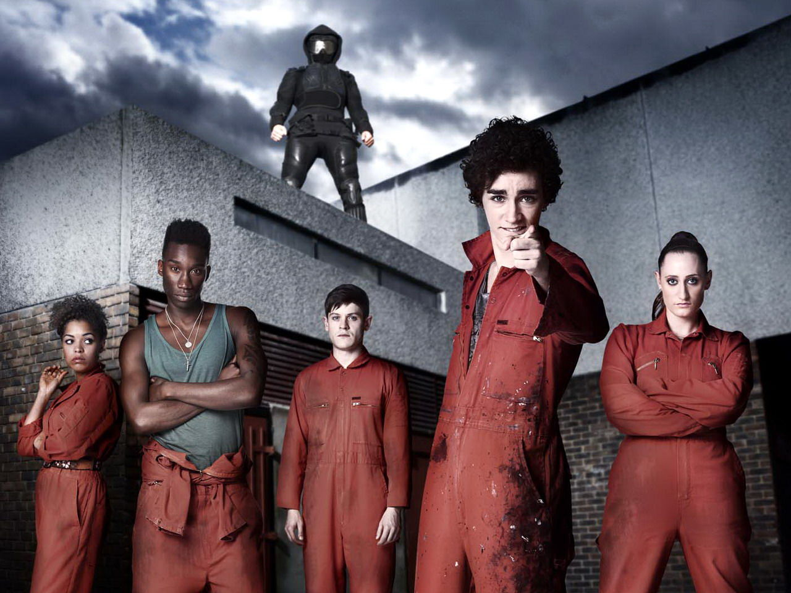
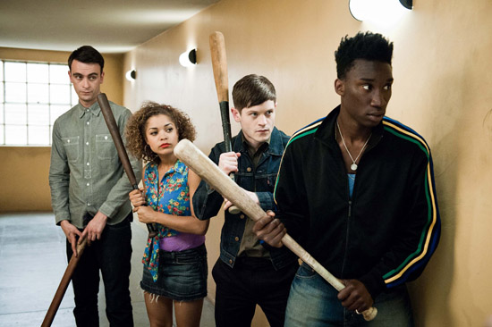
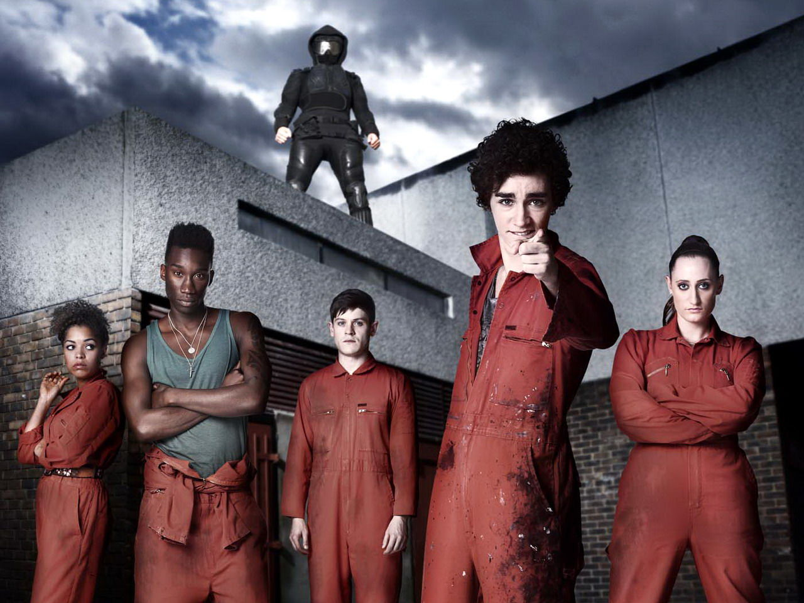
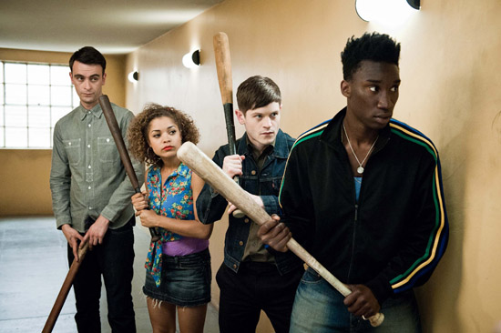

ОПИСАНИЕ
Misfit — британский трагикомедийно-фантастический телесериал. Премьера состоялась 12 ноября 2009 года на канале E4. В России первый сезон был показан 30 и 31 октября 2010 года (по 3 серии в день) на MTV под названием «Плохие». 29 октября 2011 года данный сериал показали на канале 2х2, приурочив показ сериала празднику Хэллоуин. Съёмки сериала проводились на юго-востоке Лондона, в основном в окрестностях озера Саутмир в округе Темсмид. Премьера второго сезона состоялась 11 ноября 2010 года. Премьера третьего сезона прошла 30 октября 2011 года. Премьера четвёртого сезона 28 октября 2012 года. Пятый, финальный сезон, вышел на экраны 23 октября 2013 года. E4 официально подтвердил, что сериал «Отбросы» (Misfits) закончится пятым сезоном. В 2014 году российский телеканал СТС купил права на адаптацию сериала.
СЮЖЕТ
Пятерых правонарушителей, трудящихся на общественных работах, во время разразившегося шторма поражает молнией, после чего у них открываются суперсилы, высмеивающие их основные черты характера: трудная Келли (Лорен Сока) внезапно начала слышать мысли людей, пристыженный спортивный герой Кёртис (Нейтан Стюарт-Джарретт) обнаруживает, что у него есть способность повернуть время вспять, когда он о чём-либо сожалеет, тусовщица Алиша (Антония Томас) может вызывать у человека сексуальное безумство одним прикосновением. Крайне застенчивый Саймон (Иван Реон) может сделать себя невидимым. Лишь самоуверенный Нейтан (Роберт Шиэн) поначалу переживает, что ему не досталось никакой способности. Вместо восхищения герои постепенно понимают, что все эти новые сверхспособности, которые им не особо-то были и нужны, не дар свыше, а тяжёлая ноша, приносящая душевную боль в их и так не очень успешные жизни.